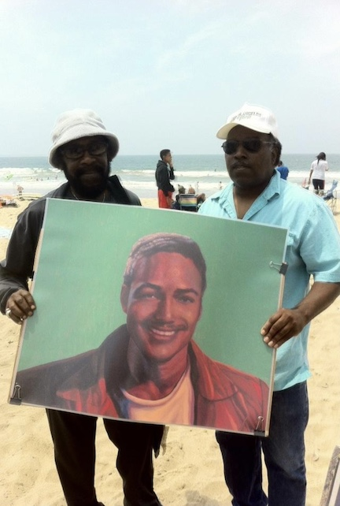

About
January 2nd , 2024 by Torrid Games
Torrid Games launched with the iOS game title SurfGod. This game gained attention for its innovative approach, offering a meditative surfing experience aimed at both surfers and non-surfers. In collaboration with oceanic pollution cleanup organizations like Heal the Bay, Torrid Games developed a free version of SurfGod, achieving 20,000 downloads, reflecting the game’s impact and the company’s commitment to raising awareness about oceanic pollution. Torrid Games is in the process of raising capital to continue this trend at a deeper and broader level with a sequel, SurfGod 2.
SurfGod is really a tongue ‘n’ cheek term surfers use in the line-up out in the water. “Look at this surfgod!” It’s also a nod to whatever gods might be bringing waves, which we surfers are very grateful for – “Pray for Surf”.
Exchange with Motown legend Wah Wah Watson circa 2012 with a CYA In California surfboard… Wah Wah Watson: I’m going to come to your house and we are going to work this Heal the Bay surfing app out. I have very powerful computers and a super high powered Modem/WiFi router.
Matt: Wow thanks, that’s uptown Wah Wah.
WW: that‚Äôs right cuz I‚Äôm an uptown m‚Ķ.f‚Ķ.r üëä
Tay Uhler, Wah Wah produced/engineered and scored the music in SurfGod HtB. In Tay‚Äôs studio Matt also played the fretless bass line (directed by Wah Wah). Subsequent to the release of SurfGod HtB, Wah Wah and Matt were going to work on a guitar teaching app. The initial veision was for it to be very heavy hitting and teach the kind of lessons he taught Matt. It would‚Äôve been like working with a very intense teacher like he was. He liked this idea but he wanted it to be nicer. A mighty, and powerful musician that had fierce moments, but here we are seeing what a sweet, giving guy he was ‚Äî very much missed. Working with him on the app‚Äôs music with Tay Uhler was one of the very bright spots in the initial SurfGod HtB iOS app which continues to inspire and keep this important work moving forward ü§ô
(Tay/Stef)
Wah Wah Watsonüé∏üôèü™¶(December 8, 1950 ‚Äì October 24, 2018)
PS. Wah Wah Watson also made sound fx for the trash that you grab in the game while you’re surfing. He additionally gave the project some cartoon figures that are currently being incorporated into the SG2 VR app.
Wah Wah & his friend celebrating Nick Gabaldon Day @Bay St(InkWell) with Heal the Bay, Tay, Stef & Matt. 